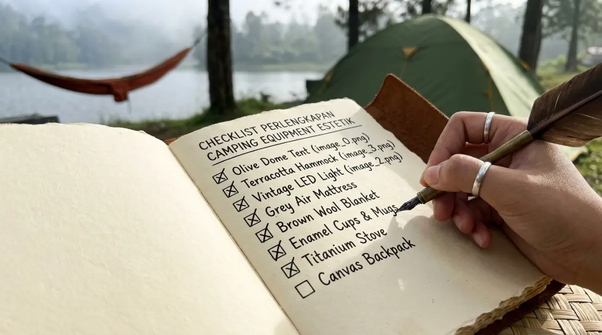
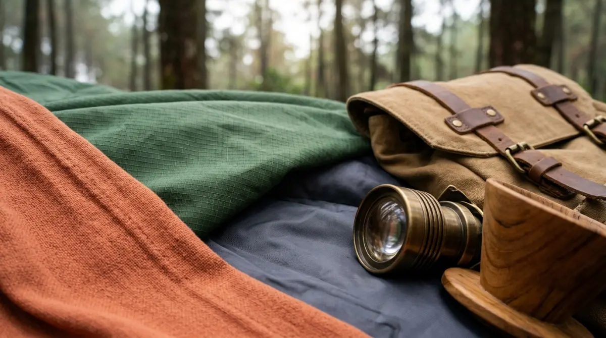

Checklist perlengkapan camping estetik — panduan visual untuk pemula yang ingin memulai.Perlengkapan camping estetik untuk pemula mencakup tenda bernuansa netral, pencahayaan warm white, hammock, furnitur lipat ringan, dan peralatan masak bergaya vintage yang dipilih berdasarkan konsistensi warna dan fungsi.
Mengapa Pemilihan Perlengkapan Menentukan Hasil Visual Camping Estetik?
Perlengkapan camping estetik yang dipilih dengan palet warna konsisten menghasilkan tampilan visual yang kuat bahkan tanpa editing foto intensif, karena harmoni warna bekerja secara alami dalam kondisi cahaya apapun.
Saat semua gear memiliki warna yang saling melengkapi, foto yang diambil dari sudut apapun cenderung terlihat estetik secara natural. Sebaliknya, gear dengan warna acak menciptakan visual yang berantakan meski ditata dengan hati-hati.
Ini bukan soal membeli gear paling mahal, melainkan soal keputusan warna yang disengaja sejak awal.
Cara Menentukan Palet Warna Camping Estetik
Menentukan palet warna camping estetik dimulai dengan memilih 2-3 warna dominan yang harmonis, kemudian menjadikannya filter utama dalam setiap keputusan pembelian gear.
Tiga palet paling populer di komunitas camping estetik Indonesia saat ini:
Earth Tone
Hijau lumut (sage green), cokelat tanah, dan krem. Sangat cocok dengan latar hutan dan pegunungan. Warna ini melebur dengan alam dan menghasilkan foto yang hangat.
Monokromatik Netral
Putih, abu muda, dan hitam. Paling fleksibel dan cocok di berbagai latar. Kelemahan: mudah terlihat kotor, perlu perawatan lebih.
Pastel Lembut
Dusty pink, mint, dan lavender. Populer untuk konten feminine dan romantic. Kontras dengan hijau alam menciptakan keseimbangan visual yang menarik.
Setelah menentukan palet, jadikan warna-warna ini sebagai patokan keras: jangan beli gear di luar palet ini meski harganya sangat menarik.

Palet warna camping estetik — earth tone, monokromatik netral, dan pastel lembut.Daftar Perlengkapan Utama Camping Estetik
Tenda
Tenda adalah elemen visual paling dominan dalam setup camping estetik, sehingga investasi terbesar seharusnya dialokasikan di sini sebelum item lain.
Pilihan tenda untuk camping estetik:
- Tenda Dome: Paling umum, mudah dipasang, tersedia dalam banyak warna. Pilih yang memiliki tiang fiberglass atau aluminium ringan.
- Tenda A-Frame: Tampilan minimalis dan sangat fotogenik. Cocok untuk 1-2 orang.
- Tenda Transparan/Bubble: Paling viral, menawarkan pemandangan langit malam dari dalam tenda. Tersedia di platform e-commerce Indonesia dengan harga bervariasi.
Hindari tenda dengan motif kompleks atau logo merek yang besar karena mengganggu kesatuan visual palet warna.
Pencahayaan
Pencahayaan adalah elemen yang paling mengubah suasana kemah saat malam dengan biaya paling terjangkau dibanding elemen estetik lainnya.
Item pencahayaan yang direkomendasikan:
- String Lights (Fairy Lights): Pilih warm white (2700K-3000K), panjang 5-10 meter, dengan baterai atau tenaga surya.
- Lentera LED Vintage: Desain bergaya klasik, cahaya warm white, dapat digantung atau diletakkan di meja.
- Lilin LED: Aman untuk area tertutup, menghasilkan cahaya berkedip alami yang sangat fotogenik.
Hammock
Hammock estetik tersedia dalam berbagai material dan warna, dan menjadi salah satu elemen visual paling kuat dalam foto camping estetik karena menghadirkan kesan santai dan menyatu dengan alam.
Pilih hammock berbahan nilon ringan atau katun rajut (cotton hammock) dengan warna yang sesuai palet. Pastikan hammock memiliki kapasitas beban yang sesuai kebutuhan dan carabiner yang berkualitas untuk keselamatan.
Furnitur Lipat
Kursi lipat bergaya director chair atau camp stool dengan rangka kayu atau aluminium, dikombinasikan dengan meja lipat ringan, membentuk area duduk yang nyaman sekaligus estetik.
Hindari furnitur dengan warna mencolok atau logo merek yang terlalu dominan. Pilih warna netral atau sesuaikan dengan palet warna utama.
Peralatan Masak dan Makan
Peralatan masak enamelware (bergaya vintage dengan tepian berwarna) atau stainless dengan finishing matte adalah pilihan paling estetik dibanding peralatan aluminium standar.
Item yang paling sering muncul dalam konten camping estetik:
- Moka pot atau french press portable untuk kopi
- Panci dan cangkir enamelware
- Talenan kayu kecil
- Cutting board bambu
Alas dan Tekstil
Karpet outdoor tipis (picnic mat) bermotif geometris atau anyaman, selimut wol bermotif etnik, dan bantal kecil outdoor adalah tekstil yang paling meningkatkan kesan estetik area duduk.
Perlengkapan Tambahan yang Meningkatkan Estetika
Beberapa aksesori kecil yang secara signifikan meningkatkan tampilan visual kemah tanpa menambah banyak beban:
- Tanaman kecil dalam pot clay atau botol kaca
- Buku dengan sampul menarik
- Kamera analog atau Instax untuk nuansa nostalgia
- Keranjang piknik rotan ringan
- Papan kayu kecil untuk prop foto
Checklist Perlengkapan Camping Estetik Pemula
Perlengkapan camping estetik pemula yang wajib dimiliki sebelum keberangkatan pertama meliputi tenda, sleeping bag, pencahayaan, furnitur dasar, peralatan masak, dan aksesori visual pendukung.
Wajib Dibawa:
- Tenda sesuai palet warna
- Sleeping bag (pilih warna netral)
- String lights atau lentera
- Hammock
- Kursi dan meja lipat
- Peralatan masak dasar
- Karpet outdoor
Opsional tapi Berdampak Besar:
- Prop foto (tanaman, buku, aksesori)
- Tripod kamera
- Selimut tekstil
- Lentera tambahan
Keselamatan (Tidak Boleh Dilupakan):
- Senter atau headlamp dengan baterai cadangan
- P3K dasar
- Repelen serangga
- Raincover tenda
Membangun perlengkapan camping estetik adalah proses bertahap yang dimulai dari keputusan palet warna. Investasikan pertama pada tenda dan pencahayaan, karena keduanya paling menentukan tampilan keseluruhan kemah. Beli gear tambahan secara bertahap berdasarkan kebutuhan aktual dan konsistensi warna.
FAQ — Perlengkapan Camping Estetik
1. Apakah semua perlengkapan camping estetik harus dibeli baru?
Tidak. Banyak item bisa dipinjam, disewa, atau dibeli bekas. Prioritaskan membeli baru hanya untuk item yang paling berdampak pada tampilan visual dan keselamatan, seperti tenda dan pencahayaan.
2. Di mana beli perlengkapan camping estetik di Indonesia?
Tersedia di platform e-commerce (Tokopedia, Shopee), toko outdoor khusus seperti Eiger, Rei, dan The North Face, serta marketplace barang outdoor bekas. Beberapa merek lokal juga menawarkan gear estetik dengan harga kompetitif.
3. Apakah perlengkapan estetik sama kuatnya dengan gear standar?
Tidak selalu. Selalu periksa spesifikasi teknis gear: kapasitas beban hammock, rating suhu sleeping bag, dan waterproof rating tenda. Estetika tidak boleh mengorbankan keamanan dan fungsionalitas.